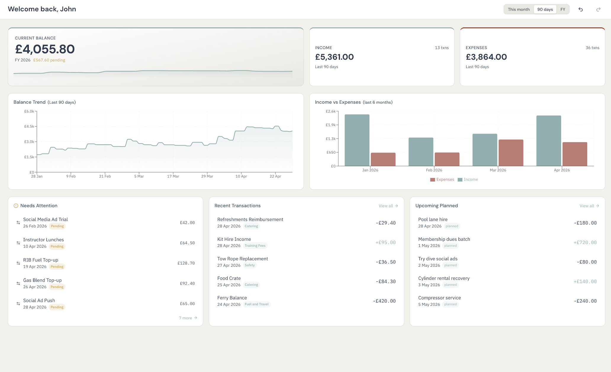

Database
A Postgres-backed home
The core requirement is a Postgres database you control. Supabase works because it provides Postgres underneath as well as optional auth and storage services.
Fidra / Cloud Connect guide
Cloud Connect is for teams that want a central Postgres-backed sync layer. Each device still keeps a local working copy for day-to-day use, but updates move through your own database rather than through a shared folder.
Needs
A Postgres database you control, or a Supabase project built on Postgres.
Best fit
Clubs with technical members or existing hosted database infrastructure.
Update style
Live notifications when available, with reconnect and polling fallbacks if not.
Access model
Direct admin access for setup, with member sign-in available through Supabase auth.

Cloud Connect is still the same desktop app. The difference is the shared sync backend rather than a different product tier.
Cloud Connect asks more of the organisation up front, but it gives you a more central live-sync shape in return.
Database
The core requirement is a Postgres database you control. Supabase works because it provides Postgres underneath as well as optional auth and storage services.
Admin connection
The first admin device connects directly with a database connection string. That is the cleanest route for setup, testing, and administrative control.
Member sign-in
If you want ordinary members to sign in without direct database credentials, keep the project URL and anon key for the Supabase-backed member path.
Ownership
One person should own the initial connection and first admin account. Devices then need normal network access to talk to the server.
Cloud Connect is easiest to understand as three jobs: prepare the infrastructure, connect the first admin device, and then add people.
This is the part that sits outside Fidra itself and defines what the app will connect to.
Use infrastructure your organisation already owns or is comfortable maintaining.
You will normally want the database connection string, and optionally the Supabase project URL and anon key.
Admins can connect directly to the database; regular members can use authenticated member access if you enable it.
This is where the organisation's Fidra setup becomes a live Cloud Connect workspace.
Give the connection a name so people can recognise the organisation or server it belongs to.
Admin mode is the direct-database path and is the right choice for the first device.
Fidra checks the connection details before using them for the full sync layer.
That account becomes the initial authenticated owner inside the shared workspace.
Once the first admin is in place, invite members by email from inside Fidra. That keeps day-to-day access separate from raw infrastructure credentials.
Supabase is useful when you want managed Postgres plus built-in auth and storage. Fidra can use it as the organisation's Cloud Connect stack rather than requiring a completely custom backend.
The organisation usually needs both: direct admin access for setup and controlled member access for everyday use.
Admin mode
This is the path for server owners, initial setup, and administrative maintenance. It uses the database connection string directly.
Member mode
This is the path for ordinary committee members when you want per-user sign-in without giving everyone database-level secrets.
In plain terms, each device keeps a local working copy while a central Postgres database becomes the shared source of updates.
Fidra keeps a local cache on the device so the desktop app remains fast and usable even when the network is not perfect.
Approved local edits are synchronised into the shared database, which becomes the common coordination layer for the team.
When the hosting setup allows it, Fidra uses Postgres notifications to tell other devices that something changed right away.
If the network or notification path drops out, Fidra reconnects and falls back to periodic refresh checks until live status is restored.
The intended fast path is live database notification. If the environment does not support that cleanly, the app falls back to checking for changes so the team still converges.
Cloud Connect is not limited to the transaction table. It covers the operational data that makes the app useful as a shared ledger.
If your club would rather avoid managing Postgres at all, the Local Sync guide is the cleaner fit and usually the simpler starting point.